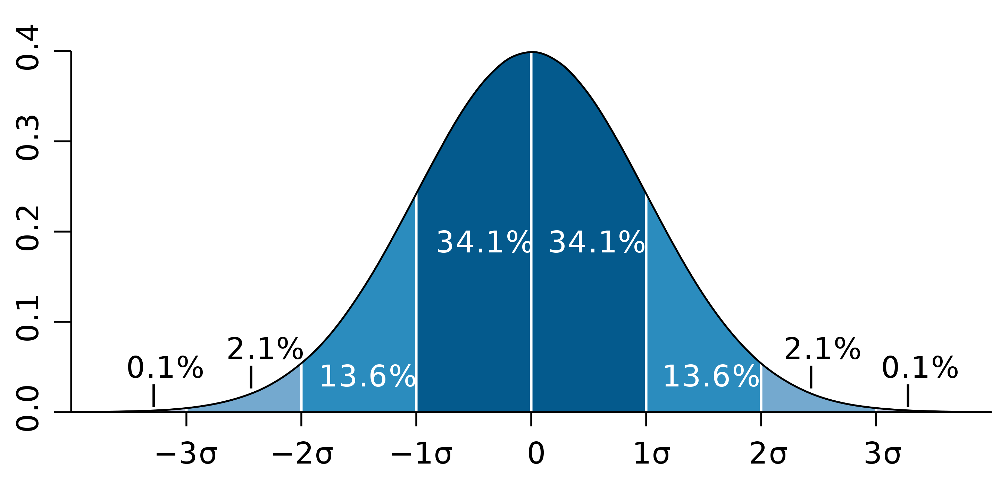

高斯分布: 大概率事件意味着什么?
https://zh.wikipedia.org/wiki/%E6%AD%A3%E6%80%81%E5%88%86%E5%B8%83
高斯分布也叫正态分布.
- 一个标准差内, 对平均值的置信度为68.27%.
- 两个标准差内, 对平均值的置信度为95.45%.
- 三个标准差内, 对平均值的置信度为99.73%.

过去50年, 标普500年增长率为7%～8%, 标准差为16%, 也就是说某些年可能亏损8%以上.
涨跌差异大概率是市场浮动的随机性造成的.
美国每年涨幅最好的10只股票、10只基金, 到第二年都会跌出前十.
除平均值差异外, 还要考虑标准差(方差).
标准差反映对平均值的偏差程度.
如何降低方差? 提高采样数.
夏普比率: (预期回报率 - 无风险利率)/标准差